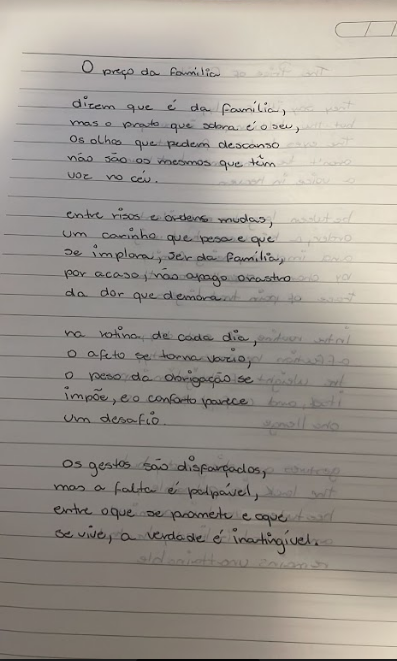
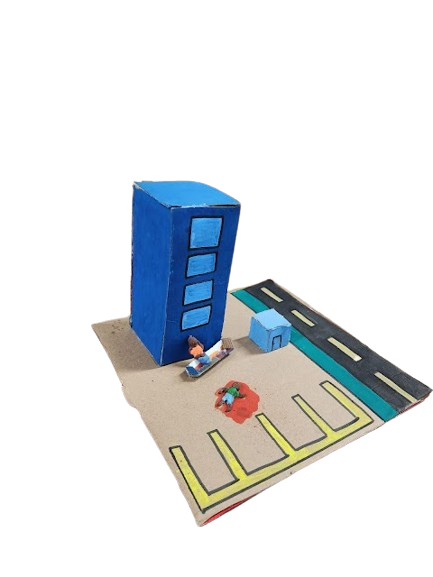

Página Inicial
Humanas
Linguagens
Matemática
Natureza
Técnico ▼
Desenvolvimento de Sistemas
Implantação e Manutenção de Sistemas
Modelagem de Sistemas
Banco de Dados

O objetivo da atividade era escrever um poema inspirado nos temas abordados pela a obra "Solitária" e depois reaçizar a tradadução do poema para inglês.

Nesta atividade realizamos a confecção da maquete de uma das cenas do livro Solitária. Meu grupo utilizou papelão, massinha e tintas guache, gostei muito de realizar essa atividade por ser bem prática.
Neste exercício, empregamos uma fotografia impressa e uma cartolina para criar uma publicação no Instagram, acompanhada por uma legenda em formato de microconto, utilizando o tempo verbal "simple past" (verbos no passado que já terminaram), em inglês. A atividade foi extremamente dinâmica, uma vez que foi realizada de forma manual, e também me permitiu reforçar meus conhecimentos sobre a língua inglesa. Habilidades Desenvolvidas: H11, H25, H10 e H24